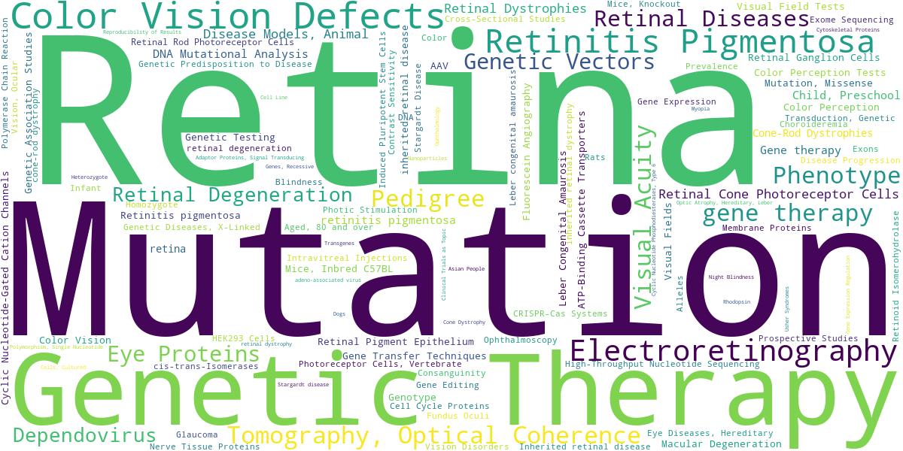

Research trend over time
Research on inherited retinal dystrophies has grown steadily since the 2000s, with especially sharp acceleration over the past five years.
The treatment landscape
Which therapeutic strategy is driving the field? Nearly half of all papers address gene therapy, marking the centre of gravity of this research area.
Most-studied genes
Inherited retinal dystrophies are linked to more than 270 genes. The most heavily studied ones line up with the targets where therapy development is most active.
Who leads the field
Aggregating the authors and affiliations of all 4,638 papers reveals who — and where — is driving this research.
Keyword landscape
A word cloud built from the MeSH headings and author keywords of the corpus. Retina, Mutation, and Genetic Therapy sit at its centre.

Leading journals
The journals where this research is most often published.